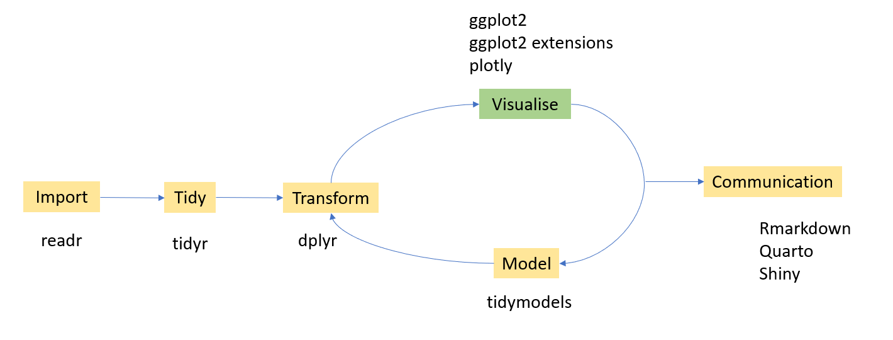

Grammar of graphics
The Grammar of Graphics is a structured way of thinking about and building data visualizations
Key Components of the Grammar of Graphics
Data: the dataset you want to visualize.
Aesthetics (aes): how variables are mapped to visual properties (x, y, color, size, shape).
Geometries (geoms): the type of plot you draw (points, lines, bars, boxplots).
Scales: control how data values map to aesthetics (e.g., continuous vs. categorical colors, log scales).
Coordinate system: the space in which the data is drawn (Cartesian, polar, map projections).
Facets: splitting data into subplots for comparison.
Statistical transformations (stats): summaries or transformations (e.g., binning in histograms, smoothing in regression lines).
Themes: non-data elements like fonts, backgrounds, grid lines.
Ingredients for plotting
Data
data ("mtcars" )head (mtcars)
mpg cyl disp hp drat wt qsec vs am gear carb
Mazda RX4 21.0 6 160 110 3.90 2.620 16.46 0 1 4 4
Mazda RX4 Wag 21.0 6 160 110 3.90 2.875 17.02 0 1 4 4
Datsun 710 22.8 4 108 93 3.85 2.320 18.61 1 1 4 1
Hornet 4 Drive 21.4 6 258 110 3.08 3.215 19.44 1 0 3 1
Hornet Sportabout 18.7 8 360 175 3.15 3.440 17.02 0 0 3 2
Valiant 18.1 6 225 105 2.76 3.460 20.22 1 0 3 1
Canvas to draw the plot
library (tidyverse)ggplot ()
Data + Aesthetics (aes)
ggplot (mtcars,aes (x= wt, y= mpg))
ggplot (mtcars,aes (x= wt, y= mpg,col= as_factor (cyl)))
Data + Aesthetics (aes) + Geometries (geoms)
ggplot (mtcars,aes (x= wt, y= mpg)) + geom_point ()
ggplot (mtcars,aes (x= wt, y= mpg)) + geom_point ()
ggplot (mtcars,aes (x= wt, y= mpg)) + geom_smooth ()
ggplot (mtcars,aes (x= wt, y= mpg)) + geom_density_2d ()
ggplot (mtcars,aes (x= wt, y= mpg)) + geom_density_2d () + geom_point ()
Add scale layer
ggplot (mtcars, aes (x = wt, y = mpg, col = as_factor (cyl))) + geom_point () + scale_color_brewer (palette = "Set1" )
ggplot (mtcars, aes (x = wt, y = mpg, col = as_factor (cyl))) + geom_point () + scale_color_manual (values = c ("red" , "blue" , "green" ))
Add coord layer
ggplot (mtcars, aes (x = wt, y = mpg, col = as_factor (cyl))) + geom_point (size = 3 ) + geom_smooth (se = FALSE ) + scale_color_brewer (palette = "Set1" ) + coord_cartesian (xlim = c (2 , 5 ), ylim = c (10 , 35 ))
`geom_smooth()` using method = 'loess' and formula = 'y ~ x'
ggplot (mtcars, aes (x = wt, y = mpg, col = as_factor (cyl))) + geom_point (size = 3 ) + geom_smooth (se = FALSE ) + scale_color_brewer (palette = "Set1" ) + coord_fixed (ratio = 3 / 10 )
`geom_smooth()` using method = 'loess' and formula = 'y ~ x'
ggplot (mtcars, aes (x = wt, y = mpg, col = as_factor (cyl))) + geom_point (size = 3 ) + geom_smooth (se = FALSE ) + scale_color_brewer (palette = "Set1" ) + coord_flip ()
`geom_smooth()` using method = 'loess' and formula = 'y ~ x'
ggplot (mtcars, aes (x = wt, y = mpg, col = as_factor (cyl))) + geom_point (size = 3 ) + scale_color_brewer (palette = "Set1" ) + coord_polar ()
Add facet layer
ggplot (mtcars, aes (x = wt, y = mpg, col = as_factor (cyl))) + geom_point (size = 3 ) + geom_smooth (se = FALSE ) + facet_wrap (~ cyl)
`geom_smooth()` using method = 'loess' and formula = 'y ~ x'
Add stat layer
ggplot (mtcars, aes (x = wt, y = mpg)) + geom_point () + stat_summary (fun = "mean" , geom = "point" , size = 5 , shape = 18 , col= "red" , alpha= 0.5 ) + scale_color_brewer (palette = "Set1" )
ggplot (mtcars, aes (x = wt, y = mpg)) + stat_summary (fun = "mean" , geom = "point" , size = 5 , shape = 18 , col= "red" , alpha= 0.5 ) + geom_point () + scale_color_brewer (palette = "Set1" )
ggplot (mtcars, aes (x = hp, y = mpg)) + geom_point () + stat_summary (fun = "mean" , geom = "point" , size = 5 , shape = 18 , col= "green" , alpha= 0.5 ) + scale_color_brewer (palette = "Set1" )
theme layer
ggplot (mtcars, aes (x = wt, y = mpg)) + stat_summary (fun = "mean" , geom = "point" , size = 5 , shape = 18 , col= "red" , alpha= 0.5 ) + geom_point () + scale_color_brewer (palette = "Set1" ) + theme_bw ()
ggplot (mtcars, aes (x = wt, y = mpg)) + stat_summary (fun = "mean" , geom = "point" , size = 5 , shape = 18 , col= "red" , alpha= 0.5 ) + geom_point () + scale_color_brewer (palette = "Set1" ) + theme_dark ()
Some examples with gapminder dataset
library (gapminder)data (gapminder)
Visualize the relationship between life expectancy, GDP per capita and continent in 2007.
<- gapminder %>% filter (year== 2007 )ggplot (gapminder2007,aes (x= lifeExp, y= gdpPercap,col= continent))+ geom_point ()+ theme (legend.position = "bottom" ) + labs (title= "Relationship between life expectancy and GPD per capita by continent - 2007" ,x = "life expectancy at birth, in years" ,y = "GDP per capita (US$, inflation-adjusted)" )
]
Add a vertical line
<- gapminder %>% filter (year == 2007 )ggplot (gapminder2007,aes (x = lifeExp, y = gdpPercap, col= continent)) + geom_point () + geom_vline (xintercept = 70 )
Add a horizontal line
<- gapminder %>% filter (year == 2007 )ggplot (gapminder2007,aes (x = lifeExp, y = gdpPercap, col= continent)) + geom_point () + geom_hline (yintercept = 20000 )
Add a diagonal line
<- gapminder %>% filter (year == 2007 )ggplot (gapminder2007,aes (x = lifeExp, y = gdpPercap, col= continent)) + geom_point () + geom_abline (intercept = 20 , slope= 200 )
All geoms in ggplot2
[1] "geom_abline" "geom_area" "geom_bar"
[4] "geom_bin_2d" "geom_bin2d" "geom_blank"
[7] "geom_boxplot" "geom_col" "geom_contour"
[10] "geom_contour_filled" "geom_count" "geom_crossbar"
[13] "geom_curve" "geom_density" "geom_density_2d"
[16] "geom_density_2d_filled" "geom_density2d" "geom_density2d_filled"
[19] "geom_dotplot" "geom_errorbar" "geom_errorbarh"
[22] "geom_freqpoly" "geom_function" "geom_hex"
[25] "geom_histogram" "geom_hline" "geom_jitter"
[28] "geom_label" "geom_line" "geom_linerange"
[31] "geom_map" "geom_path" "geom_point"
[34] "geom_pointrange" "geom_polygon" "geom_qq"
[37] "geom_qq_line" "geom_quantile" "geom_raster"
[40] "geom_rect" "geom_ribbon" "geom_rug"
[43] "geom_segment" "geom_sf" "geom_sf_label"
[46] "geom_sf_text" "geom_smooth" "geom_spoke"
[49] "geom_step" "geom_text" "geom_tile"
[52] "geom_violin" "geom_vline"
geom_boxplot
ggplot (gapminder2007, aes (x= lifeExp, y= continent))+ geom_boxplot ()
ggplot (gapminder2007, aes (x= lifeExp, y= continent, color= continent))+ geom_boxplot ()
ggplot (gapminder2007, aes (x= lifeExp, y= continent, fill= continent))+ geom_boxplot ()
]
ggplot (gapminder2007, aes (x= lifeExp, y= continent))+ geom_boxplot (fill= "forestgreen" )
]
ggplot (gapminder2007, aes (x= lifeExp, y= continent))+ geom_boxplot (fill= "forestgreen" , alpha= 0.5 )
]
geom_jitter
ggplot (gapminder2007, aes (x= lifeExp, y= continent))+ geom_jitter ()
geom_jitter + geom_boxplot
ggplot (gapminder2007, aes (x= lifeExp, y= continent))+ geom_jitter () + geom_boxplot ()
ggplot (gapminder2007, aes (x= lifeExp, y= continent))+ geom_jitter () + geom_boxplot (alpha= 0.5 )
ggplot (gapminder2007, aes (x= lifeExp, y= continent))+ geom_boxplot () + geom_jitter ()
ggplot (gapminder2007, aes (x= lifeExp, y= continent, fill= continent))+ geom_boxplot () + geom_jitter (aes (col= continent))
geom_jitter + geom_boxplot (outlier.shape = NA)
ggplot (gapminder2007, aes (x= lifeExp, y= continent, fill= continent))+ geom_boxplot (outlier.shape = NA ) + geom_jitter (aes (col= continent))
.right-plot[
Write the code to obtain the following plot.
geom_histogram
ggplot (gapminder2007, aes (x= lifeExp))+ geom_histogram ()
geom_bar (stat=“identity”)
<- data.frame (cut= c ("Fair" , "Good" , "Very Good" , "Premium" , "Ideal" ), percent= c (3 , 9 , 22.4 , 25.6 , 40 ))
cut percent
1 Fair 3.0
2 Good 9.0
3 Very Good 22.4
4 Premium 25.6
5 Ideal 40.0
ggplot (data= cut.percent, aes (x= cut, y= percent)) + geom_bar (stat= "identity" )
geom_col
<- data.frame (cut= c ("Fair" , "Good" , "Very Good" , "Premium" , "Ideal" ), percent= c (3 , 9 , 22.4 , 25.6 , 40 ))
cut percent
1 Fair 3.0
2 Good 9.0
3 Very Good 22.4
4 Premium 25.6
5 Ideal 40.0
ggplot (data= cut.percent, aes (x= cut, y= percent)) + geom_col ()
geom_line
%>% filter (country == "India" ) %>% ggplot (aes (x = year, y = gdpPercap)) + geom_line ()
Your turn
Write the code to obtain the following plot.
Data Wrangling + Data Visualization
<- gapminder %>% group_by (continent, year) %>% summarise (meanlifeExp= mean (lifeExp))
`summarise()` has grouped output by 'continent'. You can override using the
`.groups` argument.
# A tibble: 60 × 3
# Groups: continent [5]
continent year meanlifeExp
<fct> <int> <dbl>
1 Africa 1952 39.1
2 Africa 1957 41.3
3 Africa 1962 43.3
4 Africa 1967 45.3
5 Africa 1972 47.5
6 Africa 1977 49.6
7 Africa 1982 51.6
8 Africa 1987 53.3
9 Africa 1992 53.6
10 Africa 1997 53.6
# ℹ 50 more rows
ggplot (avglifeExp, aes (x= year, y= meanlifeExp, col= continent))+ geom_line () + geom_point ()
Exercise
Write an R code to reproduce the plot below.
Write an R code to reproduce the plot below.
Write an R code to reproduce the plot below.
Write an R code to reproduce the plot below.